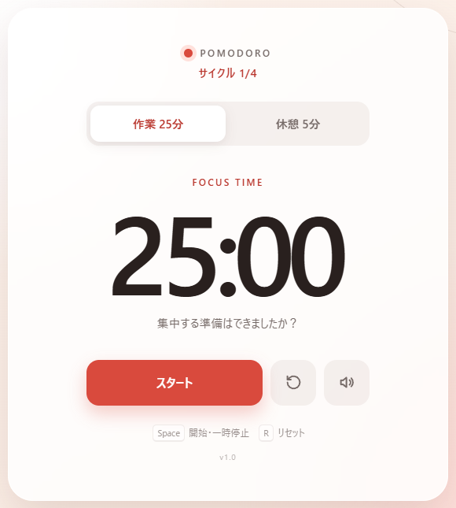
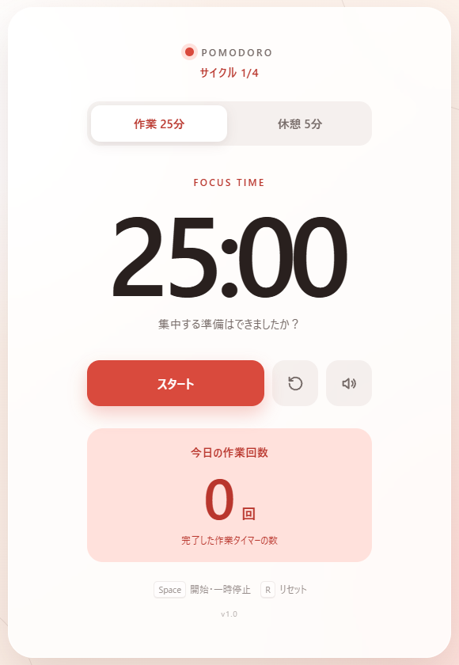

タイマー画面に今日の作業回数を表示し、作業を終えたときに1足して保存し、再読み込みやほかのタブでも同じ数を表示するようにしました。
依頼: タイマー画面に、今日の作業回数を大きく表示してください。


変更前の版と変更後の版を、同じ幅(900px)で描いて撮ったものです。画像を押すと拡大します。操作の前後の画面(0回 → 1回 → 再読み込み後も1回)は図2 の「画面の欄」の横にあります。
作業中と休憩中の切り替えのうち、回数を足す処理を通るものを示します。
時間切れを確かめる入口: 250msごとに確認 659行・タブに戻る 721行・一時停止(ボタン 670行、スペースキー 707行)
太い線の1本だけが「回数を1足して保存」を通ります。休憩の終了とモードの切り替えでは回数は増えません。
状態と切り替えはコードから取り出したもの、名前は AI が付けたものです。図に載せなかったもの 0件。
画面の数字を読み直す入口と、記録の中の順番を示します。
4つの入口と記録の手順4が、同じ「画面の数字を読み直す」に集まります。手順の番号と ②③④⑤ の札を見ます。
部品と線はコードから取り出したもの、名前は AI が付けたものです。図に載せなかったもの 2件: 補助の関数(日付の文字を作る 450行、回数を読み出す 455行)は呼ぶ側の線にたたみました。
図2 の「ブラウザの保存」を押すと開きます(ここでは開いた状態)。
保存のキーと、値を読み書きする処理と、日付の出どころを示します。
「今日」のキーの日付が、数えるときと表示するときで別の時刻から決まること(②)を見ます。
キー・読み書き・日付の出どころはコードから取り出したもの、名前は AI が付けたものです。日付の値 2026-09-25・26 は作業の完了日から作った例です。
2つのタブが保存する順番と、日付の境目をまたぐ時間切れを示します。
1〜4の順番で1回分が消えること(保存 4、本来 5)と、境目の線の左右で書く日付と表示する日付が分かれることを見ます。
読み書きの行と入口はコードから取り出したもの。4点の順番は決まった型に当てはめた「起こりうる例」で、実行して確かめてはいません。境目の場面は検査②(a delayed tick after midnight…)で、保存は前の日、表示は 0 になることを確かめています。実際のブラウザの画面では確かめていません。
| 番号 | 補った判断(AI) | 確かめ方(行はコード、検査は AI が選び実行の記録で成功を確かめたもの) |
|---|---|---|
| ① | 休憩の完了や中断、リセットでは回数を増やさない。 | 613行 Code で開く・検査「only completed work increments; pause, reset and mode changes do not」: 成功 |
| ② | 回数を記録する日付は、確認した時刻ではなくタイマーの終了時刻で決める。 | 475行 Code で開く・検査「work spanning local midnight belongs to the completion date」: 成功・検査「a delayed tick after midnight records the actual deadline's date」: 成功 |
| ③ | 日付が変わったら表示対象を当日分へ切り替える。 | 727行 Code で開く・検査「reload restores today's total and the next local date starts at zero」: 成功 |
| ④ | 保存された値が不正な場合は採用せず、保存できない場合も開いているページ内では回数を保持する。 | 460行・480行 Code で開く・検査「invalid saved counts are ignored without breaking work completion」: 成功・検査「blocked storage retains counts in memory, including failed writes to existing data」: 成功 |
| ⑤ | 別のタブで保存が変わった場合も表示を読み直す。 追加 | 726行 Code で開く・検査「another tab's saved completion appears and is preserved on the next completion」: 成功 |
図の札を押すと、右の欄に判断の理由の1文、確かめ方、差分の抜粋が出ます。
+ function recordCompletedWork() {+ // Use the timer's finish time even if a background tab resumes after midnight.+ const day = getLocalDay(deadline);+ const count = getDailyCount(day) + 1;